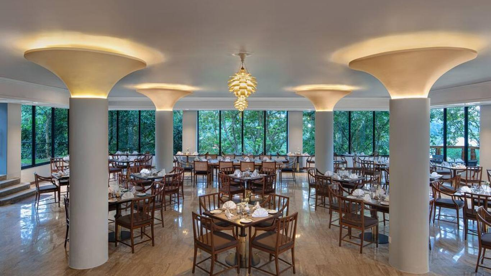

The Earl’s Regency has some of the best restaurants in Kandy, with our dining options ranging from local favourites to international feasts. Aitken
Spence Hotels are known for their award winning culinary delights, and a meal at the Earl’s Regency proves no different.
Guests can enjoy our theme nights at the Royal Pavilion restaurant from a delectable array of appetizers, mains, action stations, and desserts. The
first five star restaurant in Kandy, is sure to satisfy your urge for a lip-smacking curry. Have a perfectly cooked steak or a crispy basket of fish ‘n’ chips
while rooting for your favourite sports team at the Mountbatten Lounge. End the day with a nightcap at the Bar, a favourite filled with local and
international liquors and wines.
The culinary brigades at Aitken Spence Hotels are among the best in Sri Lanka, having won numerous awards over the years.
The restaurants at the Earl’s Regency Hotel combine the best traditions of international fine dining with a Sri Lankan touch,
making the meals here a memorable and unique experience.
Traditional Sri Lankan food is a wonderful mix of taste, colour and aroma. Because the island’s location made it a
popular stopping-off point for foreign traders, indigenous spices such as cinnamon and cloves have been enriched
by diverse culinary influences from around the world.
For example, the Arabs introduced saffron and rose water, while the Portuguese not only brought chillies to the island but also
culinary terms such as “temper”, which is derived from the Portuguese word temperado, meaning to fry and season.
The Dutch introduced recipes rich in eggs and butter, like Breudher, a Dutch Christmas cake. There are also Malay influences,
such as the steamed dessert watalappam and the rice dishes pilau and biriyani.
The restaurant is the end result of renowned Chef Balbier Singh and his Assistant Chef Wijey Singh who both hail from Bangalore, India with over 15 years of experience in leading kitchens around the world. Together, they use fresh ingredients to create original flavours and bring a little bit of India to the diners at Earl’s Regency.
Dine with the best view in Kandy city. Our extraordinary a’ la carte & buffet restaurant can satisfy any taste. Starting from Western, Far East, Sri Lanka & even Indian cuisines. Walk into the mesmerizing aroma of cinnamon and spice and everything nice in generous portions of vegetarian and non-vegetarian curries and rice along with freshly baked naans. Bite into a succulent, perfectly marinated chicken tikka masala or enjoy one of our amazing biriyanis to give your taste buds a treat. Desserts such as soft gulab jamun or freshly-made kulfi are a perfect way to end a perfect meal.
The Mountbatten Lounge at our Kandy city hotel is a place to relax and let your hair down no matter what time of the day it is. Open 24/7 for your benefit, we wanted to give our guests a chilled out location to unwind with friends, get some work done in an informal atmosphere, or sneak down for a midnight snack. It’s also a great place to relax and watch sporting events – we’ve got the large televisions, the pitchers of beer, and the comfort food to go with it! Burgers, pizzas, steak, French fries – we’re giving your favourite pub treats a makeover.

Innovative cocktails, a wide range selection of local and imported beers, wines, and hard liquor, and a laid back atmosphere to bring it all together – the Mountbatten Bar blends and mixes are award-winning. The lounge is named after Lord Mountbatten, a British statesman and naval officer, who presented the city of Kandy with the Japanese field gun which can be found at the Royal Palace Park overlooking Kandy Lake.
Snacks are served from 08.00 AM – 12.00 mid night

Tapp Bar
Innovative cocktails, a wide selection of local and imported beers, wines, and hard liquor, and a laidback atmosphere to bring it all together – the Spice Bar blends and mixes are award-winning. Try one of our Arrack Blossom Cocktails or an Elephant’s Kiss for a perfect pre or post dinner cocktail.
Dip ‘n’ Dive Bar
Our poolside Dip ‘n’ Dive bar is the place to be when lounging in our pool or catching some rays. Be sure to stop by for an endless array of cool drinks and hot snacks.
There are not many options for bars in Kandy as there are in Colombo, but keeping in mind that you are on a ‘royal’ vacation, we wanted to ensure that you have access to everything you may need when staying at the Earl’s Regency. From delicious cocktails to catchy karaoke in Kandy, Sri Lanka nightlife in its many entertaining forms can be enjoyed here.
Earl's Regency Hotel is a 5-star hotel located in Kandy, Sri Lanka. It is a luxurious hotel that offers spacious rooms, a spa, an outdoor pool, and a variety of dining options. The hotel is also home to a number of meeting and event spaces.


 Earl's Regency Hotel,
Earl's Regency Hotel,

Copyright © 2023 Earl's Regency. All Rights Reserved.